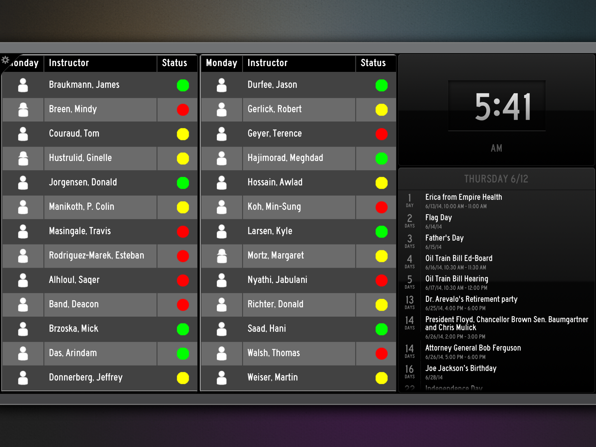

Here is a screen capture of my status board. I had three different DIY panels which each had their own HTML.

Here is a screen capture of my redesigned status board.
The emphasis on the redesign was to cut a bunch of the previous clutter out. It was culled down to the teachers and their current availability denoted by a modified status indicator color scheme, current time, and department calendar. The teacher table alternating row color was also changed to increase contrast and make it easier for eye tracking. I also fixed the column widths so they were consistent and not at the mercy of character length within them.